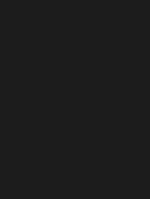
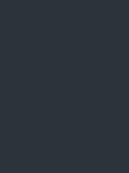
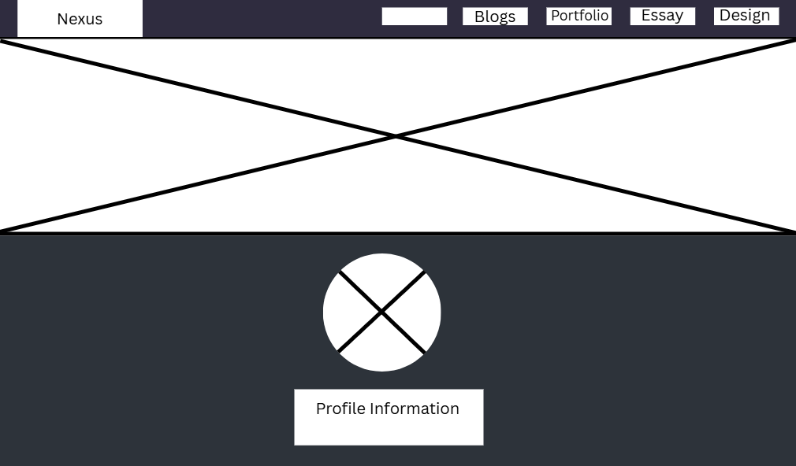
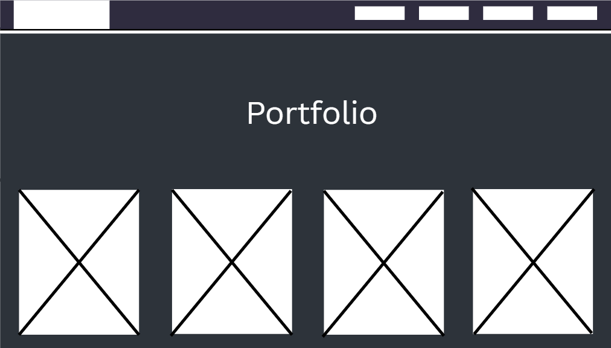
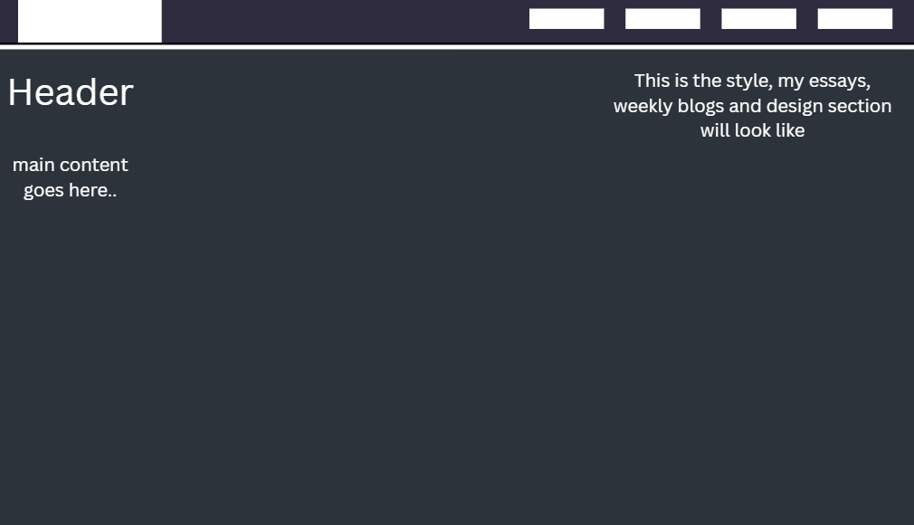
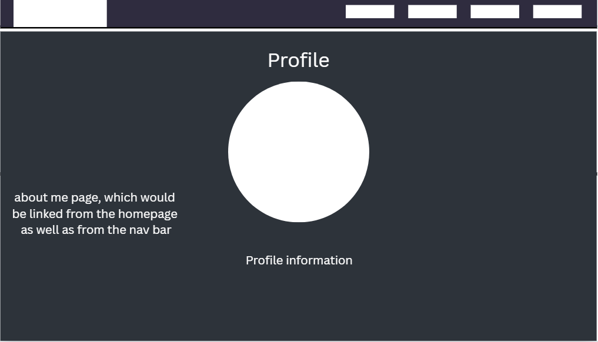

IxD Process
Style Guide
References
Style guide
Aesthetic goal
I want the aesthetic of my website to be calming and evoke an otherworldly feeling.
Colour Swatches
These are the primary colours used in my website. For the blue tone, I incorporate various shades to create depth and visual interest. I chose this palette because it aligns with the gothic aesthetic I’m aiming for—eerie and dark, yet still calm and inviting. The overall mood is inspired by the Hunter’s Dream from Bloodborne, a space that feels mysterious yet peaceful, which is exactly the atmosphere I wanted to evoke throughout the site.
|  Hex code:#1c1c1c |
Hex code:#e5e5e5 |
 There will be variants of the colour blue but the primary one used in the website is #2d333a |
Font samples
For fonts, I aimed to choose styles that complement the gothic aesthetic of my website. I was particularly inspired by the typefaces seen in medieval manuscripts and old European texts—fonts that evoke the look and feel of handwritten lettering from the Middle Ages. These typefaces help reinforce the mysterious, historical atmosphere I'm trying to create.
Georgia:
This font is very elegant, also very readble, and fits well in this gothic vibe im trying to incorpoarte into my website
Gelasio
This Font is called Gelasio, and its very similar to the Georgia font
MedivalSharp
I feel this font is more inline with the Gothic aesthetic than the other two, although its not as readable, the font will be mostly used as a way styling a page, such as your headers and Titles.
Final Designs
|  |
 |
|  |
|  |
|  |
For the Homepage, I wanted viewers to feel immersed in the scene—as if the person in the background were speaking directly to them, offering a warm welcome. I included the Profile section on the homepage for convenience, giving users immediate access to essential details and a brief introduction. It also links to the About Me page, which provides a more detailed description of myself, along with my email in case someone wants to offer feedback (or complaints!) about the website. The Blog, Essay, Portfolio, and Design sections are all easily accessible via a straightforward navigation bar. I intentionally kept the layout simple to avoid overwhelming visitors. The Blog page features cards with summaries of each blog post, helping users decide if the content is worth their time. Clicking on a card takes them to the full blog post. The Essay page follows the same structure. Both the blog and essay sections include a sidebar menu, accessible by clicking the website name (which doubles as a hidden button). This allows users to navigate between different blogs or essays without returning to the homepage. The About Me page is designed to be a simple, clean introduction—nothing too complex. As for the visual style of the Blog, Essay, and Design pages, I wanted them to resemble traditional word documents to maintain a clean, readable, and professional look.
Wireframes
Website on a phone screen
On smaller screens, such as phones, the navigation bar is resized, and the buttons are stacked vertically to save space. The blog cards are also reshaped to better fit the limited screen size, ensuring the layout remains clean and visually balanced. On the portfolio page, images are stacked vertically, with only one image per row to maintain clarity and avoid crowding.